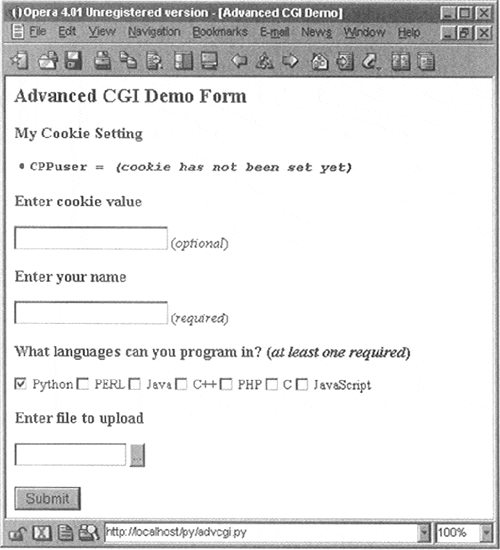
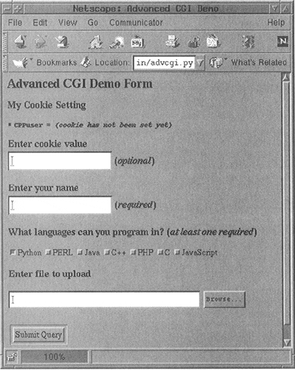
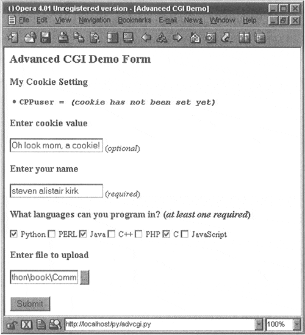
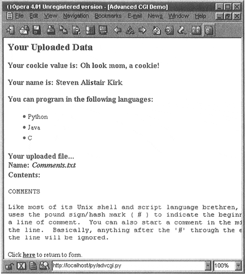
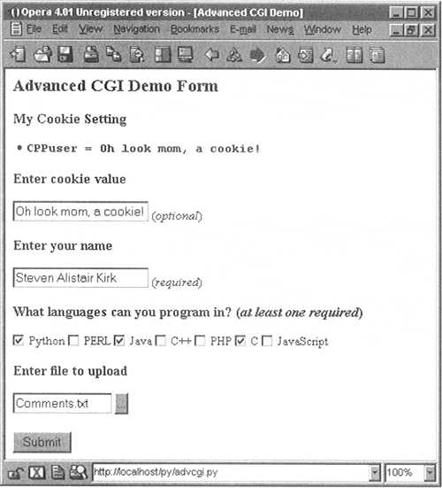

| < BACK | Make Note | Bookmark | CONTINUE > |
Advanced CGI
We will now take a look at some of the more advanced aspects of CGI programming. These include: the use of cookies—cached data saved on the client side, multiple values for the same CGI field and file upload using multipart form submissions. To save space, we will show you all three of these features with a single application. Let's take a look at multipart submissions first.
Multipart Form Submission and File Uploading
Currently, the CGI specifications only allow two types of form encodings, "application/x-www-form-urlencoded" and "multipart/form-data." Because "application/x-www-form-urlencoded" is the default, there is never a need to state the encoding in the FORM tag like this:
<FORM enctype="application/x-www-form-urlencoded" …>
But for multipart forms, you must explicitly give the encoding as:
<FORM enctype="multipart/form-data" …>
You can use either type of encoding for form submissions, but at this time, file uploads can only be performed with the multipart encoding. Multipart encoding was invented by Netscape in the early days but since has been adopted by Microsoft (starting with version 4 of Internet Explorer) as well as other browsers.
File uploads are accomplished using the file input type:
<INPUT type=file name=…>
This directive presents an empty text field with a button on the side which allows you to browse your file directory structure for a file to upload. On most browsers, this button says "Browse," but your mileage may vary. (For example, we will be using the Opera browser in our examples which has a button labeled with ellipses "…".)
When using multipart, your Web client's form submission to the server will look amazingly like (multipart) e-mail messages with attachments. A separate encoding was needed because it just wouldn't be necessarily wise to "urlencode" a file, especially a binary file. The information still gets to the server, but is just "packaged" in a different way.
Regardless of whether you use the default encoding or the multipart, the cgi module will process them in the same manner, providing keys and corresponding values in the form submission. You will simply access the data through your FieldStorage instance as before.
Multivalued Fields
In addition for file uploads, we are also going to show you how to process fields with multiple values. The most common case is when you have a set of checkboxes allowing a user to select from various choices. Each of the checkboxes is labeled with the same field name, but to differentiate them, each will have a different value associated with a particular checkbox.
As you know, the data from the user is sent to the server in key-value pairs during form submission. When more than one checkbox is submitted, you will have multiple values associated with the same key. In these cases, rather than being given a single MiniFieldStorage instance for your data, the cgi module will create a list of such instances which you will iterate over to obtain the different values. Not too painful at all.
Cookies
Finally, we will use cookies in our example. If you are not familiar with cookies, they are just bits of data information which a server at a Web site will request to be saved on the client side, e.g., the browser.
Because HTTP is a "stateless" protocol, information that has to be carried from one page to another can be accomplished by using key-value pairs in the request as you have seen in the GET requests and screens earlier in this chapter. Another way of doing it, as we have also seen before, is using hidden form fields, such as the action variable in some of the later friends*.py scripts. These variables and their values are managed by the server because the pages they return to the client must embed these in generated pages.
One alternative to maintaining persistency in state across multiple page views is to save the data on the client side instead. This is where cookies come in. Rather than embedding data to be saved in the returned Web pages, a server will make a request to the client to save a cookie. The cookie is linked to the domain of the originating server (so a server cannot set nor override cookies from other Web sites) and has an expiration date (so your browser doesn't become cluttered with cookies).
These two characteristics are tied to a cookie along with the key-value pair representing the data item of interest. There are other attributes of cookies such as a domain subpath or a request that a cookie should only be delivered in a secure environment.
By using cookies, we no longer have to pass the data from page to page to track a user. Although they have been subject to a good amount of controversy over the privacy issue, most Web sites use cookies responsibly. To prepare you for the code, a Web server requests a client store a cookie by sending the "Set-Cookie" header immediately before the requested file.
Once cookies are set on the client side, requests to the server will automatically have those cookies sent to the server using the HTTP_COOKIE environment variable. The cookies are delimited by semicolons and come in "key=value" pairs. All your application needs to do to access the data values is to split the string several times (i.e., using string.split() or manual parsing). The cookies are delimited by semicolons ( ; ), and each key-value pair is separated by equal signs ( = ).
Like multipart encoding, cookies originated from Netscape, who implemented cookies and wrote up the first specification which is still valid today. You can access this document at the following Web site:
http://www.netscape.com/newsref/std/cookie_spec.html
Once cookies are standardized and this document finally obsoleted, you will be able to get more current information from Request for Comment documents (RFCs). The most current one for cookies at the time of publication is RFC 2109.
Using Advanced CGI
We now present our CGI application, advcgi.py, which has code and functionality not too unlike the friends3.py script seen earlier in this chapter. The default first page is a user fill-out form consisting of four main parts: user-set cookie string, name field, checkbox list of programming languages, and file submission box. An image of this screen can be seen in Figure19-13, this time using the Opera 4 browser in a Windows environment.
Figure 19-13. Upload and Multivalue Form Page in Opera4 on Windows
In a browser world dominated by the Netscape and Microsoft browsers, we seldom hear of others such as Opera and Lynx, but they are out there! Opera, in particular, is known to have excellent footprint (memory size) and speed characteristics.
Well, just so you aren't totally uncomfortable, let's take a peek at what the same form looks like from Netscape running on Linux, as in Figure19-14. As you can see, Netscape uses "Browse" as the file upload label instead of the ellipses. (The rest of the screens for this section will feature Opera.)
Figure 19-14. The Same Advanced CGI Form but in Netscape4 on Linux
From this form, we can enter our information, such as the sample data given in Figure19-15.
Figure 19-15. One Possible Form Submission in our Advanced CGI Demo
The data is submitted to the server using multipart encoding and is retrieved in the same manner on the server side using the FieldStorage instance. The only tricky part is in retrieving the uploaded file. In our application, we choose to iterate over the file, reading it line-by-line. It is also possible to read in the entire contents of the file if you are not wary of its size.
Since this is the first occasion data is received by the server, it is at this time, when returning the results page back to the client, that we use the "Set-Cookie:" header to cache our data in browser cookies.
In Figure19-16, you will see the results after submitting our form data. All the fields the user entered are shown on the page. The contents of the filename given in the final dialog box was actually uploaded to the server and displayed as well.
Figure 19-16. Results Page Generated and Returned by the Web Server
You will also notice the link at the bottom of the results page which returns us to the form page, again using the same CGI script.
If we click on that link at the bottom, no form data is submitted to our script, causing a form page to be displayed. Yet, as you can see from Figure 19-17, what shows up is anything but an empty form! Information previously entered by the user shows up! How did we accomplish this with no form data (either hidden or as query arguments in the URL)? The secret is that the data is stored on the client side in cookies, two in fact.
Figure 19-17. Form Page With Data Loaded from the Client Cookies
The user cookie holds the string of data typed in by the user in the "Enter cookie value" form field, and the user's name, languages they are familiar with, and uploaded file are stored in the info cookie.
When the script detects no form data, it shows the form page, but before the form page has been created, it grabs the cookies from the client (which are automatically transmitted by the client when the user clicks on the link) and fills out the form accordingly. So when the form is finally displayed, all the previously entered information appears to the user like magic.
We are sure you are eager to take a look at this application, so here it is, presented in Example 19-6.
Example 19.6. Advanced CGI Application (advcgi.py)
The crawler has one main class which does everything, AdvCGI. It has methods to show either form, error, or results pages as well as those which read or write cookies from/to the client (a web browser).
<$nopage>
001 1 #!/usr/bin/env python
002 2
003 3 from cgi import FieldStorage
004 4 from os import environ
005 5 from cStringIO import StringIO
006 6 from urllib import quote, unquote
007 7 from string import capwords, strip, split, join
008 8
009 9 class AdvCGI:
010 10
011 11 header = 'Content-Type: text/html\n\n'
012 12 url = '/py/advcgi.py'
013 13
014 14 formhtml = '''<HTML><HEAD><TITLE>
015 15 Advanced CGI Demo</TITLE></HEAD>
016 16 <BODY><H2>Advanced CGI Demo Form</H2>
017 17 <FORM METHOD=post ACTION="%s ENCTYPE="multipart/form-data">
018 18 <H3>My Cookie Setting</H3>
019 19 <LI> <CODE><B>CPPuser = %s</B></CODE>
020 20 <H3>Enter cookie value<BR>
021 21 <INPUT NAME=cookie value="%s"> (<I>optional</I>)</H3>
022 22 <H3>Enter your name<BR>
023 23 <INPUT NAME=person VALUE="%s"> (<I>required</I>)</H3>
024 24 <H3>What languages can you program in?
025 25 (<I>at least one required</I>)</H3>
026 26 %s
027 27 <H3>Enter file to upload</H3>
028 28 <INPUT TYPE=file NAME=upfile VALUE="%s" SIZE=45>
029 29 <P><INPUT TYPE=submit>
030 30 </FORM></BODY></HTML>'''
031 31
032 32 langSet = ('Python', 'PERL', 'Java', 'C++', 'PHP',
033 33 'C', 'JavaScript')
034 34 langItem = \
035 35 '<INPUT TYPE=checkbox NAME=lang VALUE="%s"%s> %s\n'
036 36
037 37 def getCPPCookies(self):# read cookies from client
038 38 if environ.has_key('HTTP_COOKIE'):
039 39 for eachCookie in map(strip, \
040 40 split(environ['HTTP_COOKIE'], ';')):
041 41 if len(eachCookie) > 6 and \
042 42 eachCookie[:3] == 'CPP':
043 43 tag = eachCookie[3:7]
044 44 try: <$nopage>
045 45 self.cookies[tag] = \
046 46 eval(unquote(eachCookie[8:]))
047 47 except (NameError, SyntaxError):
048 48 self.cookies[tag] = \
049 49 unquote(eachCookie[8:])
050 50 else: <$nopage>
051 51 self.cookies['info'] = self.cookies['user'] = ''
052 52
053 53 if self.cookies['info'] != '':
054 54 self.who, langStr, self.fn = \
055 55 split(self.cookies['info'], ':')
056 56 self.langs = split(langStr, ',')
057 57 else: <$nopage>
058 58 self.who = self.fn = ' '
059 59 self.langs = ['Python']
060 60
061 61 def showForm(self): # show fill-out form
062 62 self.getCPPCookies()
063 63 langStr = ''
064 64 for eachLang in AdvCGI.langSet:
065 65 if eachLang in self.langs:
066 66 langStr = langStr + AdvCGI.langItem % \
067 67 (eachLang, ' CHECKED', eachLang)
068 68 else: <$nopage>
069 69 langStr = langStr + AdvCGI.langItem % \
070 70 (eachLang, '', eachLang)
071 71
072 72 if not self.cookies.has_key('user') or \
073 73 self.cookies['user'] == '':
074 74 cookStatus = '<I>(cookie has not been set yet)</I>'
075 75 userCook = ''
076 76 else: <$nopage>
077 77 userCook = cookStatus = self.cookies['user']
078 78
079 79 print AdvCGI.header + AdvCGI.formhtml % (AdvCGI.url,
080 80 cookStatus, userCook, self.who, langStr, self.fn)
081 81
082 82 errhtml = '''<HTML><HEAD><TITLE>
083 83 Advanced CGI Demo</TITLE></HEAD>
084 84 <BODY><H3>ERROR</H3>
085 85 <B>%s</B><P>
086 86 <FORM><INPUT TYPE=button VALUE=Back
087 87 ONCLICK="window.history.back()"></FORM>
088 88 </BODY></HTML>'''
089 89
090 90 def showError(self):
091 91 print AdvCGI.header + AdvCGI.errhtml % (self.error)
092 92
093 93 reshtml = '''<HTML><HEAD><TITLE>
094 94 Advanced CGI Demo</TITLE></HEAD>
095 95 <BODY><H2>Your Uploaded Data</H2>
096 96 <H3>Your cookie value is: <B>%s</B></H3>
097 97 <H3>Your name is: <B>%s</B></H3>
098 98 <H3>You can program in the following languages:</H3>
099 99 <UL>%s</UL>
100 100 <H3>Your uploaded file…<BR>
101 101 Name: <I>%s</I><BR>
102 102 Contents:</H3>
103 103 <PRE>%s</PRE>
104 104 Click <A HREF="%s"><B>here</B></A> to return to form.
105 105 </BODY></HTML>'''
106 106
107 107 def setCPPCookies(self):# tell client to store cookies
108 108 or eachCookie in self.cookies.keys():
109 109 print 'Set-Cookie: CPP%s=%s; path=/' % \
110 110 (eachCookie, quote(self.cookies[eachCookie]))
111 111
112 112 def doResults(self):# display results page
113 113 MAXBYTES = 1024
114 114 langlist = ''
115 115 for eachLang in self.langs:
116 116 langlist = langlist + '<LI>%s<BR>' % eachLang
117 117
118 118 filedata = ''
119 119 while len(filedata) < MAXBYTES:# read file chunks
120 120 data = self.fp.readline()
121 121 if data == '': break <$nopage>
122 122 filedata = filedata + data
123 123 else: # truncate if too long
124 124 filedata = filedata + \
125 125 '… <B><I>(file truncated due to size)</I></B>' <$nopage>
126 126 self.fp.close()
127 127 if filedata == '':
128 128 filedata = \
129 129 '<B><I>(file upload error or file not given)</I></B>' <$nopage>
130 130 filename = self.fn
131 131
132 132 if not self.cookies.has_key('user') or \
133 133 self.cookies['user'] == '':
134 134 cookStatus = '<I>(cookie has not been set yet)</I>' <$nopage>
135 135 userCook = ''
136 136 else: <$nopage>
137 137 userCook = cookStatus = self.cookies['user']
138 138
139 139 self.cookies['info'] = join([self.who, \
140 140 join(self.langs, ','), filename], ':')
141 141 self.setCPPCookies()
142 142 print AdvCGI.header + AdvCGI.reshtml % \
143 143 (cookStatus, self.who, langlist,
144 144 filename, filedata, AdvCGI.url)
145 145
146 146 def go(self):# determine which page to return
147 147 self.cookies = {}
148 148 self.error = ''
149 149 form = FieldStorage()
150 150 if form.keys() == []:
151 151 self.showForm()
152 152 return <$nopage>
153 153
154 154 if form.has_key('person'):
155 155 self.who = capwords(strip(form['person'].value))
156 156 if self.who == '':
157 157 self.error = 'Your name is required. (blank)'
158 158 else: <$nopage>
159 159 self.error = 'Your name is required. (missing)'
160 160
161 161 if form.has_key('cookie'):
162 162 self.cookies['user'] = unquote(strip(\
163 163 form['cookie'].value))
164 164 else: <$nopage>
165 165 self.cookies['user'] = ''
166 166
167 167 self.langs = []
168 168 if form.has_key('lang'):
169 169 langdata = form['lang']
170 170 if type(langdata) == type([]):
171 171 for eachLang in langdata:
172 172 self.langs.append(eachLang.value)
173 173 else: <$nopage>
174 174 self.langs.append(langdata.value)
175 175 else: <$nopage>
176 176 self.error = 'At least one language required.'
177 177
178 178 if form.has_key('upfile'):
179 179 upfile = form["upfile"]
180 180 self.fn = upfile.filename or ''
181 181 if upfile.file:
182 182 self.fp = upfile.file
183 183 else: <$nopage>
184 184 self.fp = StringIO('(no data)')
185 185 else: <$nopage>
186 186 self.fp = StringIO('(no file)')
187 187 self.fn = ''
188 188
189 189 if not self.error:
190 190 self.doResults()
191 191 else: <$nopage>
192 192 self.showError()
193 193
194 194 if __name__ == '__main__':
195 195 page = AdvCGI()
196 196 page.go()
197 <$nopage>
advcgi.py looks strikingly similar to our friends3.py CGI scripts seen earlier in this chapter. It has form, results, and error pages to return. In addition to all of the advanced CGI features which are part of our new script, we are also using more of an object-oriented feel to our script by using a class with methods instead of just a set of functions. The HTML text for our pages are now static data for our class, meaning that they will remain constant across all instances—even though there is actually only one instance in our case.
Line-by-line (Block-by-block) explanation
Lines 1 – 7
The usual start-up and import lines appear here. The only module you may not be familiar with is cStringIO, which we briefly introduced at the end of Chapter 10 and also used in Example 19-1. cStringIO.StringIO() creates a file-like object out of a string so that access to the string is similar to opening a file and using the handle to access the data.
Lines 9 – 12
After the AdvCGI class is declared, the header and url (static class) variables are created for use by the methods displaying all the different pages.
Lines 14 – 80
All the code in this block is used to generate and display the form page. The data attributes speak for themselves. getCPPCookies() obtains cookie information sent by the Web client, and showForm() collates all the information and sends the form page back to the client.
Lines 82 – 91
This block of code is responsible for the error page.
Lines 93 – 144
The results page is created using this block of code. The setCPPCookies() method requests that a client store the cookies for our application, and the doResults() method puts together all the data and sends the output back to the client.
Lines 146 – 196
The script begins by instantiating an AdvCGI page object, then call its go() method to start the ball rolling, in contrast to a strictly procedural programming process. The go() method contains the logic that reads all incoming data and decides which page to show.
The error page will be displayed if no name was given or if no languages were checked. The showForm() method is called to output the form if no input data was received, and the doResults() method is invoked otherwise to display the results page.
Handling the person field is the same as we have seen in the past, a single key-value pair; however, collecting the language information is a bit trickier since we must check for either a (Mini)FieldStorage instance or a list of such instances. We will employ the familiar type() built-in function for this purpose. In the end, we will have a list of a single language name or many, depending on the user's selections.
The use of cookies to contain data illustrates how they can be used to avoid using any kind of CGI field pass-through. You will notice in the code which obtains such data that no CGI processing is invoked, meaning that the data does not come from the FieldStorage object. The data is passed to us by the Web client with each request and the values (user's chosen data as well as information to fill in a succeeding form with pre-existing information) are obtained from cookies.
Because the showResults() method receives the new input from the user, it has the responsibility of setting the cookies, i.e., by calling setCPPCookies(). showForm() however, must read in the cookies' values in order to display a form page with the current user selections. This is done by its invocation of the getCPPCookies() method.
Finally, we get to the file upload processing. Regardless of whether a file was actually uploaded, FieldStorage is given a file handle in the file attribute. If the value attribute is accessed, then entire contents of the file will be placed into value. As a better alternative, you can access the file pointer—the file attribute—and perhaps read only one line at a time or other kind of slower processing.
In our case, file uploads are only part of user submissions, so we simply pass on the file pointer to the doResults() function to extract the data from the file. doResults() will display only the first 1K of the file for space reasons and to show you that it is not necessary (or necessarily productive/useful) to display a four megabyte binary file.
| Last updated on 9/14/2001 Core Python Programming, © 2002 Prentice Hall PTR |
| < BACK | Make Note | Bookmark | CONTINUE > |